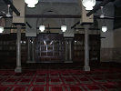
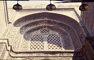

Gallery
An Ancient Centre of Learning
 |
 |  | |
Al-Azhar (The Luminous) was constructed as the central grand-mosque for Cairo by al-Qaid Jawhar al-Siqillí when he took Egypt for the Fatimid Imam-Caliph al-Mu‘izz li Dín Allah in 969 CE and founded Cairo as its capital city. It was inaugurated on 7 Ramadan 361 AH / 22 June 972 CE. Possibly so-named after Prophet Muhammad’s daughter Fatima al-Zahra, through whom the Fatimids traced their genealogy back to the Prophet.
Throughout the Fatimid period, al-Azhar played a vital role as one of the main mosques for the Imam-Caliph’s Friday prayers, where the Imam-Caliph himself often delivered the sermon; and also as an epicentre of religious learning. Various scholars, including the son of Imam-Caliph al-Mu‘izz’s famous jurist al-Qadí al-Nu‘man, ‘Alí b. al-Nu‘man and Imam-Caliph al-‘Azíz’s vizier, Ya‘qub b. Killis, delivered lectures there on Fatimid law, theology and other subjects. These majalis formed an important part in the dissemination of Fatimid knowledge. There were also majalis convened especially for women.
Imam-Caliph al-‘Azíz assigned several scholars to a house near al-Azhar and made provisions for their support. They held lectures and sessions in the mosque. Al-Azhar was also one of the main mosques in which the official appointment letter of the chief judge was read out in public; and where the qadís (judges) presided over cases. On important occasions, gatherings were held here and the structure was brightly lit up. Meals were also offered at these occasions.
Following the Fatimid period, al-Azhar was sidelined by the Ayyubids but restored and expanded by the Mamluks as a grand-mosque and a centre for religious instruction. Even though now it was one of many religious academies, it retained its primary position because of its history and its location at what was, until the eighteenth century, the political, economic and social centre of Cairo.
Some of the more well-known scholars to have lived and taught at al-Azhar were Ibn al-Haytham (d.430 AH/1039 CE) and later Ibn Khaldun (d.808 AH/1406 CE). Even during the Fatimid era, there were renovations and additions made to the structure. During the Ayyubids rule, post-Fatimid from the late 12th to the late 13th century CE, it lay in neglect. The Mamluks then added a great deal to the mosque and surroundings up to and including the 18th century CE.
Today, al-Azhar is still one of the most important grand-mosques of Cairo. As a centre for learning, it was transformed, beginning in the late nineteenth century under the Ottoman Pashas, into a modern, multi-disciplinary, multi-faculty university with campuses around Cairo and other cities in Egypt, with affiliations to institutes and learning centres internationally.
Al-Azhar has always attracted students from all over the Muslim world, as it does to this day. Its collections are renowned for the large number of manuscripts of the Muslim theological sciences that they hold. Gateways
Gateways